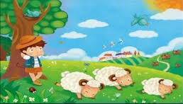
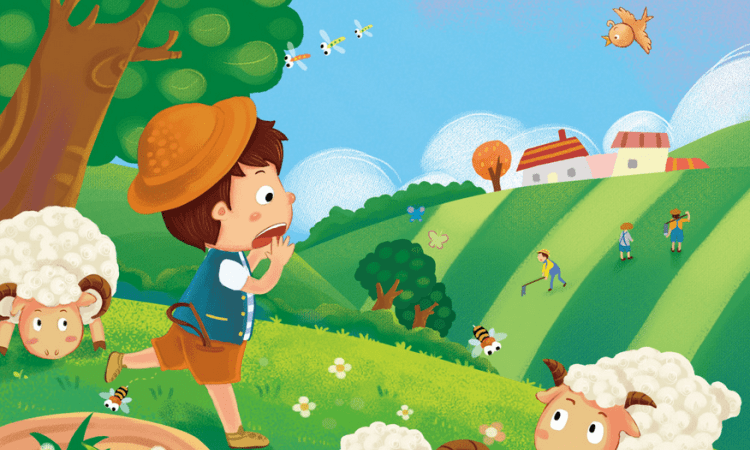
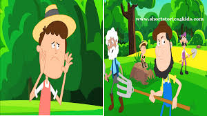
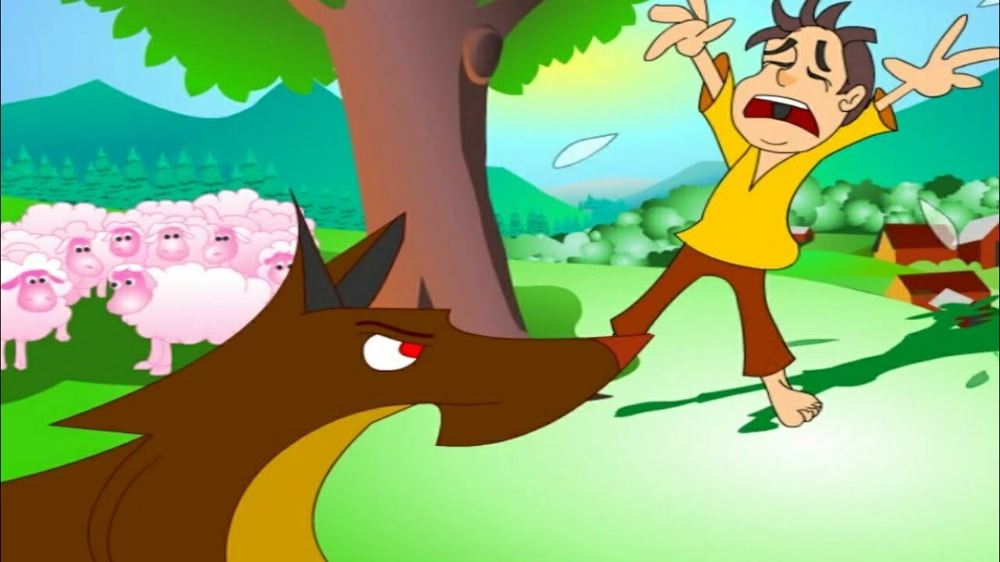

The Shepherd Story
A shepherd boy lives in a village in China
(Çinde köyün birinde bir çoban çocuk yaşar)
He looks after sheep in the mountains everyday.
( Her gün dağlarda koyun güder.)
One day he is bored.He plays a trick on the villagers.
(bir gün sıkılır.)(köylülere bir oyun oynar.)
He screams, “Wolf! Wolf! Come and help me!”
(kurt !kurt!yardım edin! Diye bağırır.)
All of the villagers go to the mountains to help the shepherd boy,
(bütün köylüler çobana yardım etmek için dağlara giderler.)
but the shepherd boy says, “There is no wolf.
( çoban çocuk kurt yok der.)
The wolf heard you and ran away.”The villagers go back to their village.
(kurt sizi duydu ve kaçtı der)(köylüler evlerine geri dönerler.)
The shapherd boy laughed behind them,
(çoban arkalarından güler)
“You are foolish.I played a trick on you,
(siz aptalsınız)(ben size oyun oynadım)
however you believed me.”
(yine de bana inandınız.)
The next week he is bored again.
(ertesi hafta tekrar sıkılır.)
He plays the same trick on the villagers.
(köylülere aynı oyunu oynar.)
He screams, “Wolf! Wolf! Come and help me!”
(kurt !kurt!yardım edin! Diye bağırır.)
Most of the villagers go to the mountains to help the shepherd boy,
( köylülerin çoğu çobana yardım etmek için dağlara giderler.)
but the shapherd boy says, “There is no wolf.
( çoban çocuk kurt yok der.)
The wolf heard you and ran away.”
(kurt sizi duydu ve kaçtı der)
The villagers go back to their village.
(köylüler evlerine geri dönerler.)
The shapherd boy laughed behind them,
(çoban arkalarından güler)
“You are foolish.I played a trick on you,
(siz aptalsınız)(ben size oyun oynadım)
however you believed me.”
(yine de bana inandınız.)
The next week the shepherd boy is bored again.
(ertesi hafta çoban yine sıkılır.)
He plays the same trick on the villagers again.
(köylülere aynı oyunu tekrar oynar.)
He shouts, “Wolf! Wolf! Come and help me.”
(kurt!kurt!yardım edin diye bağırır.)
Some of the villagers go to the mountains to help the shapherd boy,
( köylülerin bazıları çobana yardım etmek için dağlara giderler.)
but the shapherd boy laughes at the villagers,
(ama çoban köylülere güler)
“You are foolish.I played a trick on you,
(siz aptalsınız)(size şaka yaptım)
however you believed in me.”
(ama bana inandınız der.)
The villagers are very angry with the shapherd boy
(köylüler çobana çok kızar.)
and go back to their village again.
(ve köylerine tekrar giderler.)
One day the shapherd boy is very tired.
(bir gün çoban çok yorulur.)
He goes to sleep under a tree.
(bir ağacın altında uykuya dalar.)
He sometimes sneezes, sometimes hiccups, sometimes itches, crosses his legs.
(bazen hapşırır,hıçkırır,kaşınır,ayaklarını üst üste atar.)
When he wakes up, it is dark outside.
(kalktığında her yer karanlıktır.)
A black wolf comes towards him.
(siyah bir kurt üzerine gelir.)
He is frightened, and he trembles.
(korkar ve titrer)
He shouts, “Wolf! Wolf! Come and help me!”
(kurt kurt!yardım edin diye bağırır)
None of the villagers goes to the mountains to help the shepherd boy
(köylülerin hiçbiri çobana yardıma gitmez)
because they don’t believe him.
(çünkü ona inanmazlar.)
The wolf looks at the lambs and the shephard boy.
(kurt koyunlara ve çobana bakar.)
He thinks these lambs are delicious
(bu koyunlar çok lezzetli diye düşünür.)
but this shepherd boy is more delicious.
(ama çoban daha lezzetlidir diye düşünür)
The wolf eats him.
(kurt onu yer)
That evening the shepherd boy doesn’t go to the village,
(o gece çoban köye gitmez)
so the villagers are worried about the shapherd boy.
(köylüler endişelenirler.)
They go to the mountains and look for the shapherd boy
(dağlara çobanı aramaya giderler)
but they can’t find the shepherd boy.
(ama çobanı bulamazlar.)
They can find only a few bones.
(sadece bir kaç kemik bulurlar.)
Don’t tell a lie, Tell the truth
(Yalan söylemeyin)(Gerçeği söyleyin)



